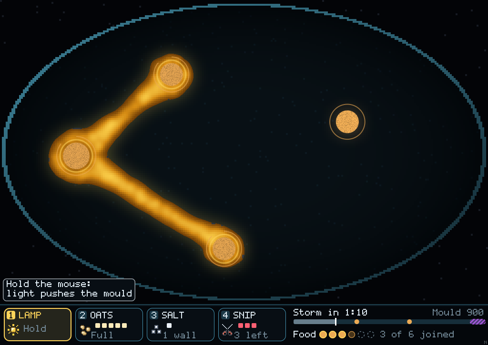
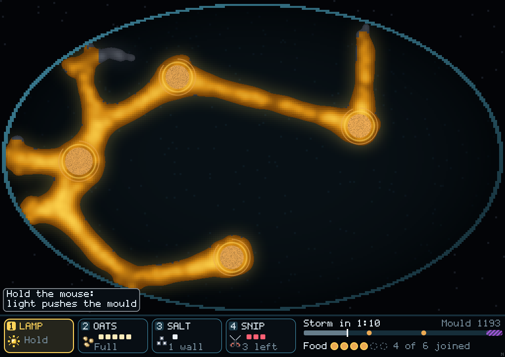
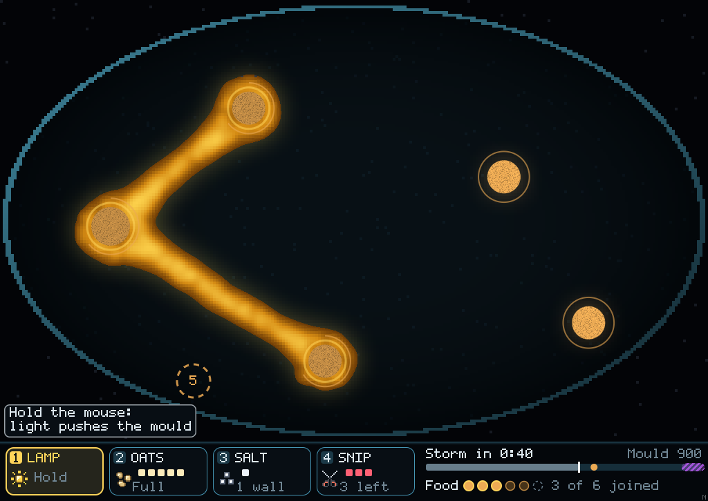
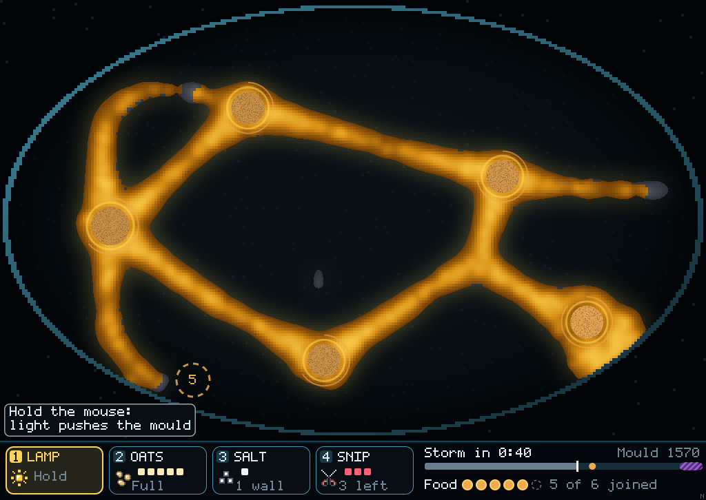
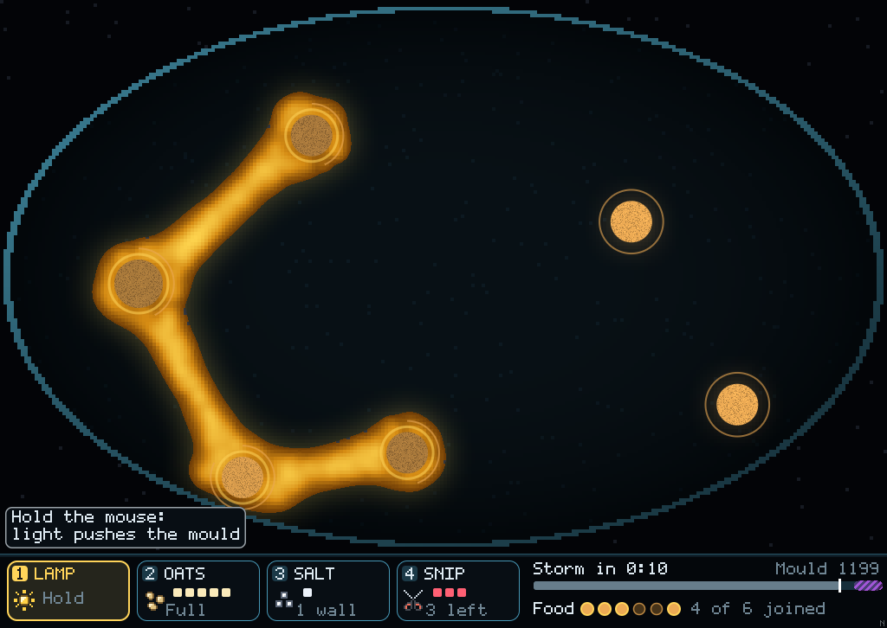
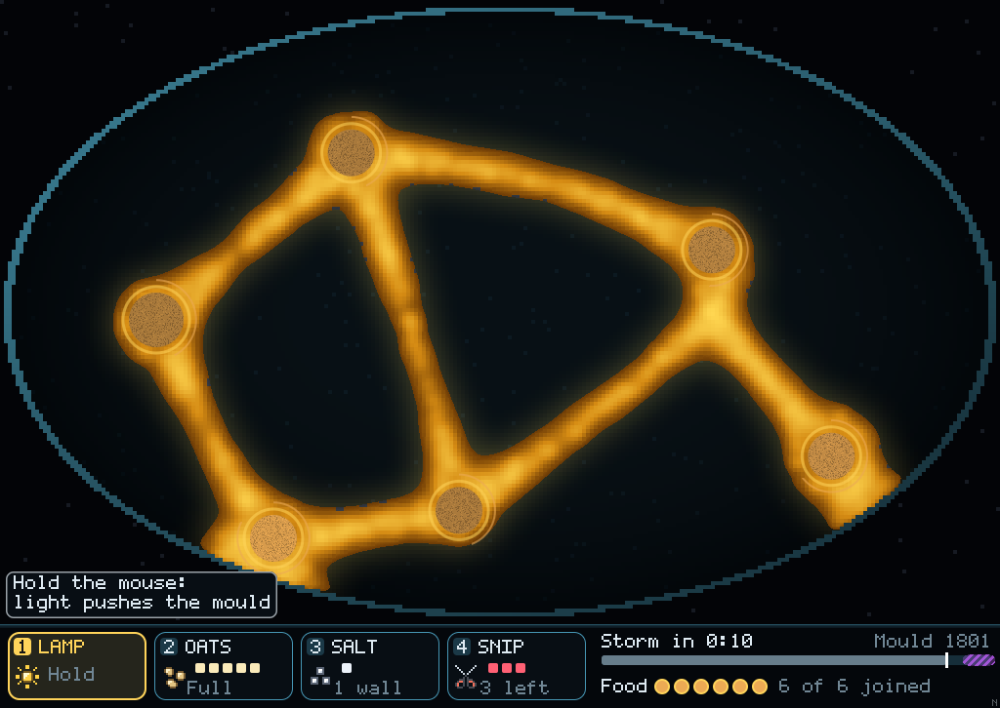

Mould · Jones's sensor angle · 9 Nov 2026
The walkers look ahead at three points: straight on, and some angle to either side. We ship 45°. Jones's own default is 22.5°, the setting where he says the network "never stabilizes completely" and keeps sprouting new branches across gaps. Below is the same dish with the player doing nothing, at each setting. Nothing else changed.
At 22.5° the mould reaches all six piles by itself on every seed. Doing nothing earns stars, so the dishes stop being a challenge. Which way would you like to go?
Seed 1, free dish, no player input. Joined by the end: 45° 4 of 6 piles, 22.5° 6 of 6. Network length against the shortest possible: 45° 1.13×, 22.5° 1.63×.






| Free dish | 45° (shipped) | 22.5° |
|---|---|---|
| Do nothing: stars | 0 0 0 0 | 1 2 1 2 |
| Do nothing: piles joined | 4 2 3 2 | 6 6 6 6 |
| Random play: stars | 0 0 0 0 | 1 2 2 2 |
| Scripted plan: stars | 2 2 2 2 | 1 2 2 2 |
| Thrift star, any hand | 4 of 28 runs | 0 of 28 |
| Frame time, average | 3.3 ms | 3.8 ms |
| Frame time, worst | 11 ms | 25 ms |
git fetch origin claude/project-thread-cek3ly && git checkout claude/project-thread-cek3ly
cargo run --release --bin mould
T, then sensor_angle down to 22.5